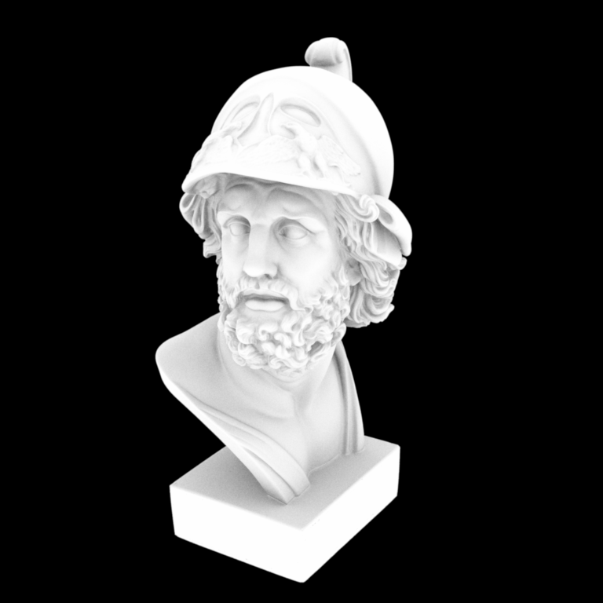
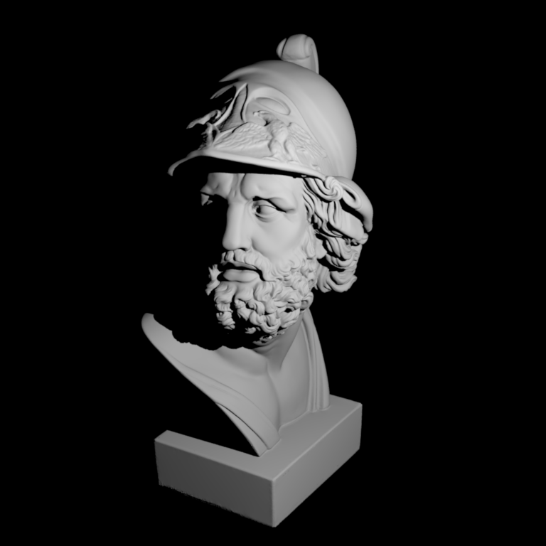

**Programming Assignment 3 - Monte Carlo Sampling and Ambient Occlusion**
Feedback
========
This assignment was very interesting as the sampling techniques that warp uniform transformations. This was important to understand the monte carlo integration and in-turn the rendering equation. Performing the actual derivations for sampling gave clear view of how monte carlo integration works, which uptil now was not understood comfortably. Moreover, the rendering algorithms gave even better understanding of ray tracing as an algorithm.
Exercise writeup
================
**Part 1: Monte Carlo Sampling**
1.1 Sample Warping
1.1.1 Warp::squareToTent and Warp::squareToTentPdf
The derivation for sampling from the given distribution by following the given reciepe is attached as an image below:
![Figure [1]: Square to Tent Warping Derivation](images\squareToTentProof.png)
![Figure [1]: Square to Tent Warping Derivation](images\squareToTentProof1.png)
1.1.2 Warp::squareToUniformDisk and Warp::squareToUniformDiskPdf
The derivation for sampling from the given distribution by following the given reciepe is attached as an image below:
![Figure [2]: Square to Uniform Disk Warping Derivation](images\squareToUniformDiskProof.png)
![Figure [2]: Square to Uniform Disk Warping Derivation](images\squareToUniformDiskProof1.png)
1.1.3 Warp::squareToUniformSphere and Warp::squareToUniformSpherePdf
The derivation for sampling from the given distribution by following the given reciepe is attached as an image below:
![Figure [3]: Square to Uniform Sphere Warping Derivation](images\squareToUniformSphereProof.png)
![Figure [3]: Square to Uniform Sphere Warping Derivation](images\squareToUniformSphereProof1.png)
1.1.4 Warp::squareToUniformHemisphere and Warp::squareToUniformHemispherePdf
The derivation for sampling from the given distribution by following the given reciepe is attached as an image below:
![Figure [4]: Square to Uniform Hemisphere Warping Derivation](images\squareToUniformHemisphereProof.png)
![Figure [4]: Square to Uniform Hemisphere Warping Derivation](images\squareToUniformHemisphereProof1.png)
1.1.5 Warp::squareToCosineHemisphere and Warp::squareToCosineHemispherePdf
The derivation for sampling from the given distribution by following the given reciepe is attached as an image below:
![Figure [5]: Square to Cosine Hemisphere Warping Derivation](images\squareToCosineHemisphereProof.png)
![Figure [5]: Square to Cosine Hemisphere Warping Derivation](images\squareToCosineHemisphereProof1.png)
1.2 Validation
1.2.1 Warp::squareToTent and Warp::squareToTentPdf
Warped Sampling and Warp Test result screenshots are attached as an image below:
![Figure [6]: Square to Tent Warping](images\squareToTent.png)
![Figure [7]: Chi-square Test for Square to Tent Warping](images\chisquareToTent.png)
1.2.2 Warp::squareToUniformDisk and Warp::squareToUniformDiskPdf
Warped Sampling and Warp Test result screenshots are attached as an image below:
![Figure [8]: Square to Uniform Disk Warping](images\squareToUniformDisk.png)
![Figure [9]: Chi-square Test for Square to Uniform Disk Warping](images\chisquareToUniformDisk.png)
1.2.3 Warp::squareToUniformSphere and Warp::squareToUniformSpherePdf
Warped Sampling and Warp Test result screenshots are attached as an image below:
![Figure [10]: Square to Uniform Sphere Warping](images\squareToUniformSphere.png)
![Figure [11]: Chi-square Test for Square to Uniform Sphere Warping](images\chisquareToUniformSphere.png)
1.2.4 Warp::squareToUniformHemisphere and Warp::squareToUniformHemispherePdf
Warped Sampling and Warp Test result screenshots are attached as an image below:
![Figure [12]: Square to Uniform Hemisphere Warping](images\squareToUniformHemisphere.png)
![Figure [13]: Chi-square Test for Square to Uniform Hemisphere Warping](images\chisquareToUniformHemisphere.png)
1.2.5 Warp::squareToCosineHemisphere and Warp::squareToCosineHemispherePdf
Warped Sampling and Warp Test result screenshots are attached as an image below:
![Figure [14]: Square to Cosine Hemisphere Warping](images\squareToCosineHemisphere.png)
![Figure [15]: Chi-square Test for Square to Cosine Hemisphere Warping](images\chisquareToCosineHemisphere.png)
**Part 2: Rendering Algorithms**
2.1 Ambient Occlusion
Underneath is the comparison between my rendered image and the given reference image when rendering is done using point lights.

Code running screenshot is also attached beneath:
![Figure [16]: Ambient Occlusion Rendering Running](images\AOCode.png)
2.2 Point Lights
Underneath is the comparison between my rendered image and the given reference image when rendering is done using point lights.

Code running screenshot is also attached beneath:
![Figure [16]: Point Rendering Running](images\PointCode.png)
Other Details
================
**Encountered problems**
**Time spent on each task**
*Task 1*
Understanding and Revising Monte Carlo Intergration, Inversion Method for sampling from PDF
5 hours
*Task 2*
Sqaure to Tent Warping
8 hours
*Task 3*
Square to Uniform Disk Warping and Square to Uniform Sphere Warping
2 hours
*Task 4*
Square to Uniform Hemisphere Warping and Square to Cosine Hemisphere Warping
4 hours
*Task 5*
Point Light Source Rendering
4 hours
*Task 6*
Ambient Occlusion Rendering
4 hours
*Task 7*
Documentation
3 hours